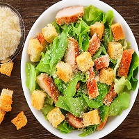
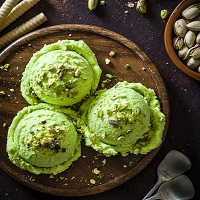
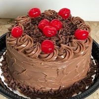
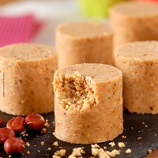
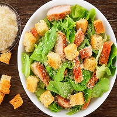
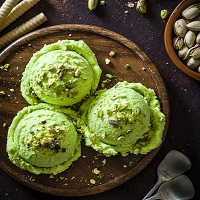
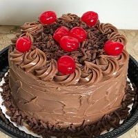
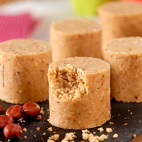

Lista dos meus filme favoritos
Lista dos meus hobbies
Lista das minhas comidas favoritas
- Sushi
- Frutos do Mar

- Batata Frita

- Salada Caesar

Lista das minhas sobremesas favoritas
- Sorvete de Pistache

- Bolo de Chocolate

- Paçoca

- Chocolate





